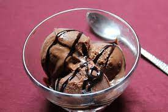

Chocolate Ice-cream
Ingredients
- Fresh Cream
- Milk
- sugar
- Cocoa Powder
steps
- Whip the cream in a bowl until thick & fluffy.
- Add ¾ tin vanilla essence and whipped cream and mix well
- Pour into a container and freeze until set.
- Add cocoa powder to milk and mix well to form a paste.
- Add the remaining ¼ tin vanilla essence to butter. Heat over a medium flame until the mixture is thick and gloss
- Serve the chocolate sauce with ice-cream.

pasta
Ingredients
- Butter
- Pasta
- Salt
- Vegetables
steps
- Heat 4 cups water along with ½ teaspoon salt till it comes to a boil.
- When the water comes to a boil, add 100 grams pasta.
- Cook the pasta without any lid on medium to high heat.
- Strain the pasta .Add in a bowl and or keep in the strainer or colander. Cover and keep aside..
- While the pasta is cooking, you can prepare the masala base. First, finely chop spring onions, 2 medium to large tomatoes, capsicum and carrot.
- Add cooked pasta and mix well with masala and tomatoes base. Cook for 2-3 minutes. Turn off the flame. Tomato Pasta is now ready. Garnish with grated Parmesan cheese or feta cheese or grated mozzarella cheese.
.jpeg)